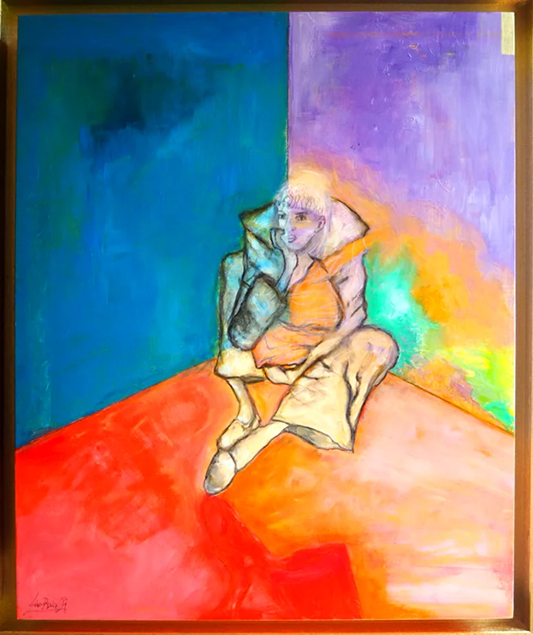

Peau d’âne
Une exposition autour du vêtement, du visage et de la cartographie de l’intime, présentée au Canapé à Gif-sur-Yvette.
Découvrir l’expositionSite officiel d’Ana Ruiz Llamazares, artiste peintre et plasticienne à Gif-sur-Yvette, en Essonne. Peintures, installations, expositions et articles de presse : son parcours est réuni ici.
Ana Ruiz développe un travail de peinture et d’installation où la couleur, la matière et l’imaginaire composent un univers sensible et structuré. Ses toiles se répondent d’une série à l’autre : maisons, paysages volcaniques, visages et vêtements y deviennent des territoires intimes.
Née à León, en Espagne, Ana Ruiz Llamazares a étudié à l’école de dessin artistique CEAC, en Espagne, puis à Paris avec l’artiste peintre argentine Beatriz Lozada. Elle vit et travaille en France depuis 1987.
Premier prix jeune artiste au Monumento al minero de Guardo (Espagne) en 1976, elle est élue artiste de l’année à Gif-sur-Yvette en 2004 et présente l’année suivante « Angles de vie » au château de Belleville.
Son travail a été exposé à Gif-sur-Yvette (galerie-restaurant Le Canapé, château de Belleville), à Villebon-sur-Yvette, à Palaiseau et à Jouy-en-Josas.

Une exposition autour du vêtement, du visage et de la cartographie de l’intime, présentée au Canapé à Gif-sur-Yvette.
Découvrir l’exposition